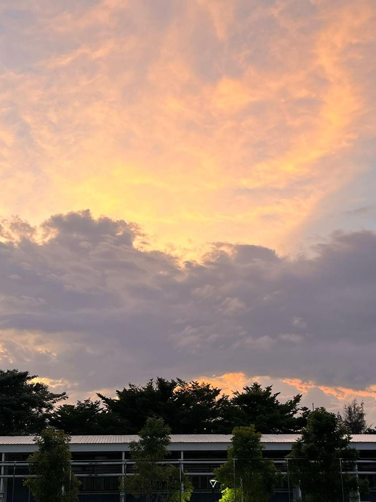

ท้องฟ้ายามกลางคืนที่มืดสนิท กับมีแสงเจิดจ้าจากที่ๆหนึ่ง ดั่งเช่นสายน้ำแห่งความคิดแม้ว่าความคิดนั้น จะมีความมืดมิดเพียงใด เพียงชั่วขณะหนึ่งจะมีแสงนำทางจากจุดเล็กๆและเริ่มสว่างจ้าจนเริ่มบดบังความมืดเหล่านั้น
เหล่าดาวบนท้องฟ้า หากมองด้วยตาเปล่าจะเห็นว่ามันมักจะห่างกันไม่มากหรืออยู่เป็นกลุ่ม หารู้ไม่ว่า สิ่งที่เราเห็นไม่ใกล้เคียงกับความจริงแม้สักนิดเดียว อย่าปล่อยให้สิ่งที่เราเห็นมากพหนดความจริงที่เราควรจะรู้ได้
แม้จะเป็นดาวบนท้องฟ้าเช่นกัน มุมๆเดิม ท้องๆอันเดิม แต่เมื่อเวลาเปลี่ยน ดาวก็เปลี่ยนเปรียบเสมือนความจริง ที่จะเปลี่ยนแปลง จากที่เราเห็นล่าสุดเสมอ
ตะวันยามเย็นทั้งๆที่ไม่แยงตาเหมือนตอนเที่ยง แต่กลับเจิดจ้าได้ดีแม้จะมีตาข่ายมาบังเฉยเลยแฮะ
ท้องฟ้านี้เรามักจะเห็นกันอยู่ทุกวัน แต่จะมีวันไหนนะที่เราจะเงยหน้ามามองและเก็บไว้ในความทรงจำ ทั้งๆที่มันสวยทุกวัน แต่เรากลับสนใจในตอนที่่มันบังเอิญมองขึ้นด้านบนซะงั้น
แม้แสงที่ใกล้จะมืด แต่ยังคงมีแสงสว่าง จงเป็นดั่งท้องฟ้าล่ะ

สวยงามนะ ลองคิดว่าสักวันหนึ่งการจะได้เห็นเมฆก้อนใหญ่แบบนี้มันจะมาอีกไหม แต่จะคิดไปทำไมในเมื่อตอนนี้เรายังมองมันจนเต็มอิ่มได้ก็พอแล้ว
ก้อนเมฆสีชมพูหรอ?? มันจะเป็นดั่งความรักรึเปล่านะที่เข้ามาแล้วแปรเปลี่ยนกลับไปเป็นดั่งเดิม
ผู้คนในอาคารจะรู้ไหมว่าท้องฟ้านั้นสวยแค่ไหน เรามักจะจมปรักอยู่กับสถานที่สถานที่หนึ่ง จนลืมมองดูท้องฟ้าที่เปรียบเสมือนเราที่เปลี่ยนแปลงและสวยงามจากสิ่งแวดล้อมขนาดไหน
ก็นะ ทั้งๆที่เป็นภาพแท้ๆกลับมองดูเหมือนภาพวาดบนผ้าใบเลยเนาะ คนเราคงไม่ต่างกัน บางทีมันก็มีบ้างแหละที่ชีวิตเราจะคล้ายกับละครเรื่องหนึ่ง แต่ก็นั้นแหละ เมื่อผ่านมันไปมันจะกลายเป็นวันธรรมดาวันหนึ่ง เหมือนท้องฟ้าที่วันต่อไปก็เปลี่ยนไปเสียแล้ว